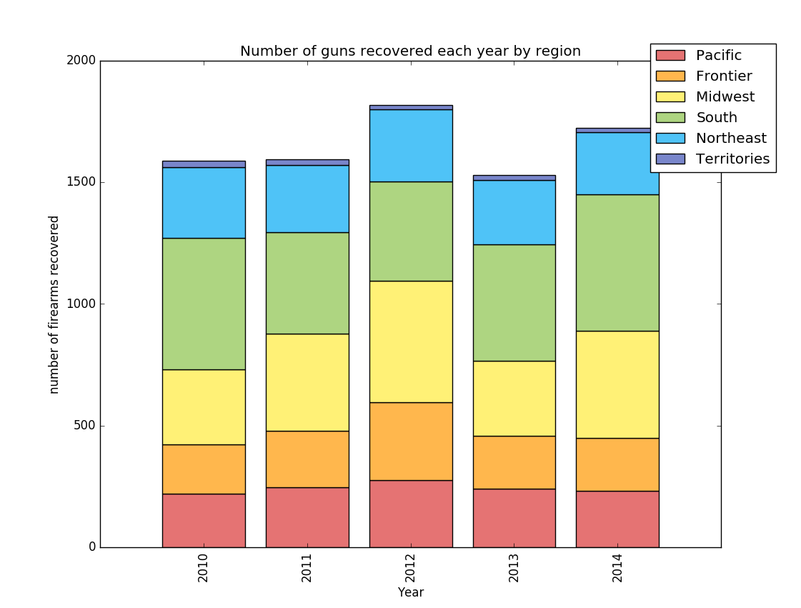

Finding Dark Web users in the Blockchain
Blockchain - Darknet - Crime
Blockchain - Darknet - Crime
Our project focused on correlating popular users on Dark Web forums with similar popular addresses in the Bitcoin blockchain.
"Can we identify high-volume sub-networks of Bitcoin transactions and categorize them using crime statistics and information about the Darknet?"
We desired to predict information about buyers, sellers, and exchanges of goods in anonymous Bitcoin transactions by cross referencing a number of related datasets. In creating networks of Blockchain nodes and user forum posts on the Darknet, we tried to find common popularity growth patterns of nodes between the two networks. By examining trends over time, vendors' popularity on the Darknet contains information we can link to popularity of Bitcoin users and addresses. As people purchase goods from vendors, we should see an increase in popularity, defined by number of posts and frequency users are quoted on market forums, that can be traced to the Blockchain.
To start, we created network graphs of the two datasets, Blockchain and Darknet forum data. For the Blockchain, each node represents a user and the edges are transactions between users weighted by the number of transactions between them. Our forum data presented an interesting challenge as it is not as easily represented as a network. After looking at how users interact over forums and how vendors advertise their products, we came up with a simple representation. Nodes represent each user on the forum and the edges represent each time a vendor quotes a non-vendor, or the opposite direction. Edges are weighted by the number of times one node in the pair has quoted the other.
Our initial approach to find the popularity of vendors on the forums was to use the Page Rank algorithm, however the forum already provides a metric for user popularity called Karma, upvotes and downvotes given by any user on the forums. We looked at this as well as the number of posts a user makes over time to measure the growth and interaction of users to vendors. From this we were able to determine the growth of the top 20 most popular vendors from January - November 2014.
First, we used the data from the Bitcoin Blockchain API to analyze Bitcoin transactions and wallet data in search of patterns. The Blockchain contains a series of transactions, each back linked to inputs from previous transactions and forward linked to outputs generated by the transaction. The Blockchain in itself is a network, however we needed to agregate the transaction subgraphs into a graph so nodes become users. Each input to a transaction is owned by a single user and is an output of a previous transaction, so we find all the transactions that match a user's public key and create edges between the input user and output users.
Second, we used this Darknet dataset generated by an individual who scraped many different Darknet markets from 2013 to 2015. The archive is split into .tar.xz files, representing a single market, that uncompress into folders, each associated with the day the pages were scraped. Some contain as few as 2 dates or more than 60 dates. The raw data we were dealing with was html files of the scraped forum pages. User profiles were among these and gave us insights into their popularities. The snapshots provide a good, but far from perfect, estimation of how the markets were on a specific day. His dataset is ~1.6TB uncompressed so our analysis used a very small portion of this. We looked at one forum dataset from one market, Silkroad v2, which was shut down in December of 2014, an overall size of ~130GB.
It took a while to sift through this dataset a really see what we could get from it. We spent a lot of time reading posts and looking at how users interact with each other on these forums to better understand how and what kinds of patterns we would see in the Blockchain. There are many different thread topics for people to post on ranging from product advertisement, vendor promotion, and bitcoin security. A common pattern was revealed in interactions between buyers and sellers. Initially, a vendor will join the site with little popularity, either quickly recognized as a vendor from a different market or are new to all markets. Once a vendor creates a topic about their product, buyers create posts asking about how reliable a vendor is and how good a product is. Sometimes vendors will give promotional samples for buyers to try before obtaining larger quantities. Once a buyer has sampled or tried their product they usually come back for a review and help other people decide where and what to buy. Popular vendors get their reputation by interacting with their customers often, answering questions, saying thank you to returning customers etc. This showed us that a strong interaction between buyer and seller on the forum means buyers are purchasing from the vendor, a pattern of popularity growth that we would see in the Blockchain.
And last, we used this FBI crime dataset to analyze the geographic location and number of different crimes with potential to have relations to the Darknet or illegal transactions. The dataset contains data from 2007 to 2015 and is broken down by state, county, city, and type of crime. Our analysis focused on specific crimes that could potentially show correlations to Darknet transactions, which included property crime, forgery and counterfeiting, fraud, weapons, drug abuse violations and gambling.
Each Darknet user is associated with a position based on how long and how often they post on the forums. Non-vendor positions range from "Newbie" to "Hero Member", while vendors maintain the position of "Vendor". Various other positions are given to site admins and moderators and developers. This bubble chart shows information about users in Darknet Silkroad 2 forums throughout the year of 2014. Users with the position of "Newbie" and "Jr. Member" have been omitted. Usernames were also anonymized for privacy concerns.
This stacked bar chart shows information about the number of users for different member types over the year of 2014. Member types include Newbie, Jr. Member, Full Member, Sr. Member, Hero Member, Vendor and Others, which include Administrator and Journalist. The stacked bar chart is able to show two views, one is the relative version and one is the absolute version of the data.
This line chart shows the top 20 users in the darknet forum, who have the highest popularity rates in November, 2014. The popurlarity rate is calculated using log10 of the absolute difference between the up and down votes of their posts. This is the same logarithm Reddit used to calculate their posts ranking, just without the time variable. The line chart shows the growth of these top 20 users from March 2014 to November 2014. Usernames were anonymized.
This line chart shows the top Blockchain users by in-degree centrality. Blockchain transactions were partitiioned into small time frames of around a week, and then built into a graph. Preprocessing was required to tie users to their individual public addresses, which are intended to provide anonymity. Then top users were connected across each date window and their centrality was plotted over time.
This stacked bar chart shows information about guns recovered during the period of 2010 to 2014 by region of the United States.
This bar chart shows information about criminal arrests related to drug usage during the period of 2007 to 2015 across the United States.
The question we began with and sought out to research was ambitious to say the least. We were put at odds with the sheer volume of data but we did not break our perserverance. It required much pruning and pre analysis that also helped us refine our questions. We split our data into small communities to sift through and learn about. The Blockchain and Darknet hide microconnections among their entities that, once we group and order enough of them together, allow us to analyze their over all structure and learn how the bigger picture works with all the tiny moving parts. When this data reveals information about the people behind the connections, our trust in the security of information is tested.
Our datasets gave us a lot of information about the interaction between users in the Bitcoin Blockchain and the Darknet. We looked a subsets of each, data between the beginning and end of the year 2014. For the Darknet, we limited our analysis to the Silk Road 2.0 market forums. Even with this portion of a much larger uninspected dataset, we learned a lot about the the most popular users and how the popularity of users changes over time. The Blockchain showed us that we could take a network and re-arrange its nodes to tell a more helpful story of the most popular addresses.
We believe our project has boldly scratched the surface of researching a largely unanalyzed cryptocurrency. With further resources, many areas can, and should be further explored. This includes examining the data sets for Bitcoin tumbling (laundering), legitimacy of transactions, prediction of market prices and inflation of this highly volatile currency, patterns in types of markets (i.e. drugs, fake documents, services, donations), further analysis of specific events, such as marketplace openings and closings.
Due to resource constraints, we were able to conduct analysis only on small datasets from specific timelines. That being said, we hope that our project can provide insights for future generalizable research and predictive ability in this field. It can also serve as a foundation for further exploration of how these transactions relate or affect other illegal transaction patterns, ideally, utilizing the wealth of drug and crime data available.